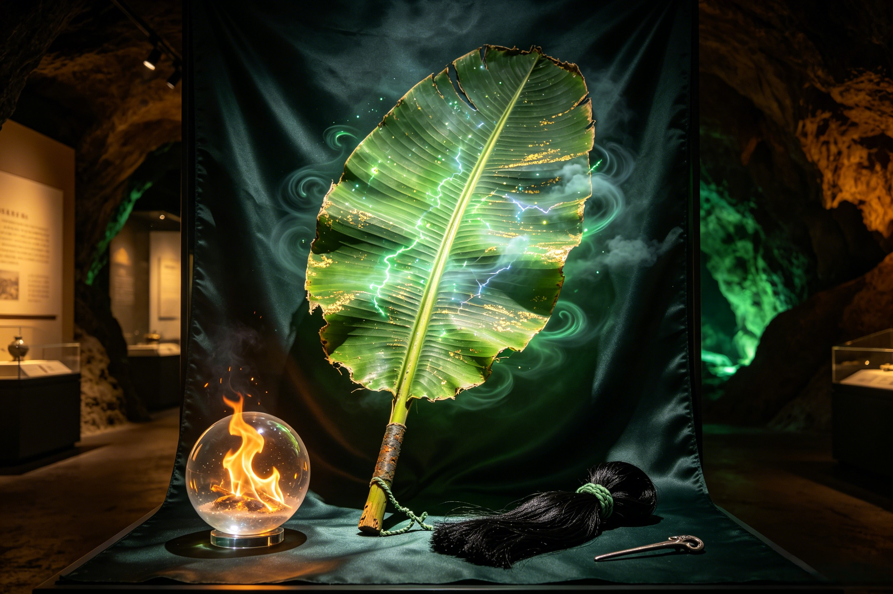

The Wind That Commands the Elements
One swing extinguishes the eternal fire. Two swings summon the monsoon. Three swings send an immortal flying 84,000 li. The Banana Leaf Fan (芭蕉扇) — the most versatile elemental artifact in Chinese mythology and the iron queen's inseparable companion.
The Banana Leaf Fan is not a manufactured artifact. It was never forged in a smith's furnace, never carved by a craftsman's hand, never shaped by any being's deliberate intention. According to the most ancient Taoist traditions preserved in the esoteric texts of the Mao Shan lineage, the fan is a primordial leaf from the World Tree (世界树, shijie shu) that existed at the dawn of creation — before the separation of heaven and earth, before the formation of the sun and moon, when the cosmos was still a single undifferentiated whole. When Pangu, the firstborn giant of Chinese creation mythology, split the cosmic egg with his celestial axe, the fragments of the primordial world-tree scattered across the newborn universe. Most fragments dissolved into the fabric of the new cosmos — becoming stars, mountains, rivers, and the spiritual essence that animates all things. But one leaf, uniquely imbued with the pure essence of wind (风之本源, feng zhi benyuan), did not dissolve. It fell through the newly formed layers of reality — past the celestial realms, through the atmospheric heavens, through the clouds and the storms — and came to rest in the mortal realm, in a region that would one day become known as Flaming Mountain. This leaf still lives. It pulses with verdant energy in a way that forged weapons cannot. Its veins carry not sap but concentrated wind-element qi — the same primordial energy that drives the monsoon winds, the same essence that fills the sails of celestial barges, the same breath that animates all living things. The fan cannot be replicated: no smith, not even Taishang Laojun in his Eight Trigrams Furnace, could create another artifact like it. Sun Wukong's Ruyi Jingu Bang was also not forged conventionally — it was once the pillar that stabilized the Eastern Ocean, another unique primordial artifact shaped from the cosmic order itself rather than from mortal or celestial craftsmanship. In some Taoist classifications, the fan is counted among the "Five Elemental Treasures" (五行至宝, wuxing zhibao), representing the wind-wood element in its most concentrated and powerful form — a classification that places it alongside artifacts of such cosmic significance that their existence predates the celestial bureaucracy itself.
The Banana Leaf Fan's powers operate in three escalating tiers, each corresponding to a different number of swings and each drawing upon a different depth of the fan's primordial power. One Swing — The Extinguishing Wind: A focused blast of cool, moisture-laden air that can extinguish any fire — any fire, without exception. This includes the eternal flames of Flaming Mountain, which were kindled by Taishang Laojun's Eight Trigrams Furnace bricks and had burned unchecked for centuries. It includes Red Boy's samadhi fire technique, which is among the most powerful supernatural flames in Chinese mythology. And according to some accounts, it could even neutralize the flames of the Eight Trigrams Furnace itself, making the fan the only artifact in existence capable of countering the Supreme Lord's celestial fire. The wind does not merely blow the fire out — it neutralizes the fire element at a spiritual level, dispersing the concentration of yang energy that makes the flames self-sustaining. Two Swings — The Storm Wind: A sustained gale that summons monsoon conditions within moments. Torrential rain. Thunder and lightning. Temperature drops of forty degrees or more. A localized weather system of devastating power that can transform a landscape in minutes. This is the wind Princess Iron Fan uses to defend her territory when armies approach — a single two-swing wave and the sky turns black, the ground turns to mud, and visibility drops to zero. Three Swings — The Banishing Wind: The fan's most famous and fearsome power, and the one that has captured the imagination of readers for five centuries. A single full-strength sweep generates a cyclone of such elemental force that it sends the target hurtling 84,000 li through the air — approximately 42,000 kilometers, the full circumference of the Earth. This is not an attack that wounds; it is an attack that removes. Sun Wukong himself, the Great Sage Equal to Heaven, who had survived beheading, thunderbolt execution, and forty-nine days in the Eight Trigrams Furnace, was sent flying by this wind for an entire night before he could arrest his momentum. Only beings possessing the Wind-Calming Pearl (定风珠, dingfeng zhu) — a rare celestial treasure that anchors the bearer against any wind magic — can resist the triple swing. Zhu Bajie was also sent tumbling by the fan during the pilgrims' early attempts, his celestial marshal's cultivation proving no match for the primordial wind. The Bull Demon King, uniquely, knew the fan's secrets and could wield it himself — the only being besides his wife who could command its power. Erlang Shen's divine blade, one of the few weapons in the cosmos that can match the fan's sheer power, would have met its match had the two ever been deployed against each other directly.
The Banana Leaf Fan is not a tool that anyone can pick up and wield. It demands specific knowledge, a specific relationship with its wielder, and a specific state of being that few beings in the cosmos can achieve. The technique is deceptively simple in appearance but impossibly complex in practice. The fan must be held at a precise angle to the local wind current — the angle shifts depending on season, elevation, temperature gradient, and the phase of the moon. The wielder must chant a silent incantation — a sequence of breath-control techniques passed orally from master to master, never written down, never inscribed on any scroll, existing only as living knowledge transmitted from one body to another. The fan's size is adjustable. For daily use, Princess Iron Fan shrinks it to the size of an ordinary handheld fan and tucks it into her sash — a demure accessory that gives no hint of its apocalyptic power. For battle, she releases the size constraint and the fan expands to its true proportions: larger than her torso, a massive palm leaf that requires both hands to wield effectively, her body braced in a warrior's stance with feet planted and weight centered. The fan responds to intention as much as physical force. Anger produces the banishing wind, because the fan reads the wielder's heart and amplifies the emotional state behind the swing. Calm produces the extinguishing wind, because only serenity can neutralize fire at the spiritual level. Gentleness produces the cooling breeze — the fan's least dramatic but most compassionate power, the one Princess Iron Fan uses daily to make life on Flaming Mountain tolerable for those under her protection. This is why she is its perfect master: she can access all three emotional states instantly, and her iron self-control means she never accidentally deploys the wrong wind. The fan also possesses a recognition protocol that has frustrated every attempt to steal it. When Sun Wukong obtained the real fan through elaborate deception — transforming into the Bull Demon King and tricking her into handing it over — he found to his fury that the fan would not shrink back to portable size for him. He was forced to carry the enormous leaf on his shoulder, the size of a small tree, making him a conspicuous target across the landscape. Only when the Bull Demon King, disguised as Zhu Bajie, tricked Wukong into handing over the fan did the artifact return to its rightful master's control. Guanyin's vase of pure water is another artifact that requires spiritual purity to wield effectively — a parallel that suggests the deepest principle of Chinese mythological artifacts: the most powerful tools are not controlled by force but by worthiness. Nezha's Wind-Fire Wheels also command elemental forces, but where Nezha's artifacts ride fire and wind in tandem, Princess Iron Fan's artifact is the wind — not a vehicle for it but an embodiment of it.
After the pilgrims successfully extinguished Flaming Mountain and passed through toward the Western Paradise, what became of the Banana Leaf Fan? The novel is explicit on this point, and the detail is one of the most important in the entire Flaming Mountain episode: Sun Wukong returned it. Unlike the many powerful artifacts in Journey to the West that are taken by the victors as spoils of war — the treasures of dragon kings, the weapons of defeated demons, the elixirs of alchemists — the Banana Leaf Fan was genuinely borrowed and returned to its rightful owner. This makes it exceptional. Why did Sun Wukong, who had no qualms about stealing the Peaches of Immortality, the celestial wine, and Laozi's elixir, return the fan? Three interpretations have persisted among scholars of Chinese literature. First, the pragmatic interpretation: Sun Wukong, after the elaborate deceptions — hiding in her tea, torturing her from within her own body, transforming into her husband to extract the fan — was genuinely shamed by the lengths he had been forced to go. The Monkey King is many things: a trickster, a warrior, a rebel. But he has a code. He recognized that he had crossed a line, and returning the fan was a gesture of atonement. Second, the mechanical interpretation: The fan would not function for anyone but Princess Iron Fan. It refused to shrink for him. It may have refused to generate wind for him. Keeping it would have been pointless — a dead artifact, a leaf that was just a leaf. Third, the cosmic interpretation: Returning the fan symbolized the restoration of cosmic order. The pilgrims passed through Flaming Mountain, completing their journey, but the world — and its demon sovereigns — continued to exist beyond their pilgrimage. Princess Iron Fan was not destroyed; she was not deposed; she was not dragged to heaven in chains. She remained queen of what remained of her domain. And in some folk traditions that arose in the centuries after the novel's publication, she began using the fan not for defense but for stewardship — bringing seasonal rains to the region that was once scorched, transforming herself from a figure of isolation and defense to one of community protection. The mountain's eternal fire was extinguished by the pilgrims' passage, but the fan's power remained undiminished. Tang Sanzang's pilgrimage was made possible by the fan being returned — a reminder that in Journey to the West, mercy and restoration are as important as conquest and punishment. The Jade Emperor's celestial order is preserved when artifacts remain with their proper guardians, and Princess Iron Fan's continued possession of the fan represents a rare victory for demon sovereignty in a novel that usually ends with demons being slain or converted.
It is arguably the most versatile elemental artifact in all of Chinese mythology. One swing extinguishes any fire at a spiritual level — including the eternal flames of Flaming Mountain and Red Boy's samadhi fire. Two swings summon monsoon conditions with torrential rain, thunder, lightning, and a forty-degree temperature drop. Three swings send the target hurtling 84,000 li (approximately 42,000 kilometers — the full circumference of Earth). Only the Wind-Calming Pearl (定风珠) can resist its power. The fan also has a gentle cooling-breeze mode used daily by Princess Iron Fan to make life on Flaming Mountain tolerable.
Two primary reasons. First, the fan has a recognition protocol: it refused to shrink to portable size for a thief, forcing Sun Wukong to carry the enormous leaf on his shoulder like a small tree. Second, after the elaborate deceptions — hiding in her tea, torturing her from within, transforming into her husband to extract the fan — Sun Wukong was genuinely shamed by his actions. Unlike most powerful artifacts in Journey to the West that are taken as spoils of war, the Banana Leaf Fan was genuinely borrowed and returned. This act of return symbolizes the restoration of cosmic order and represents one of the few times the pilgrims do not permanently deprive a demon of their treasure.
According to ancient Taoist traditions, the fan is a primordial leaf from the World Tree that existed at the dawn of creation, before the separation of heaven and earth. When Pangu split the cosmic egg, this leaf — uniquely imbued with the pure essence of wind (风之本源) — fell to the mortal realm rather than dissolving into the fabric of the cosmos. Its veins carry concentrated wind-element qi rather than sap, and it cannot be replicated by any craftsman — not even Taishang Laojun in his Eight Trigrams Furnace. Some Taoist classifications count it among the "Five Elemental Treasures" (五行至宝).
Dive Deeper